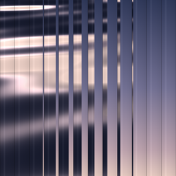
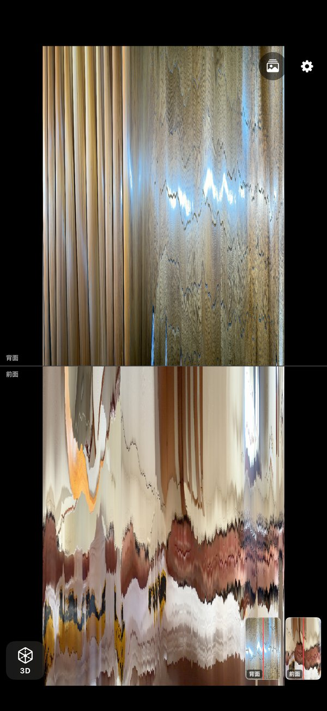
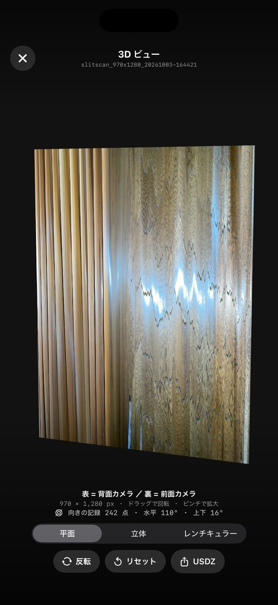
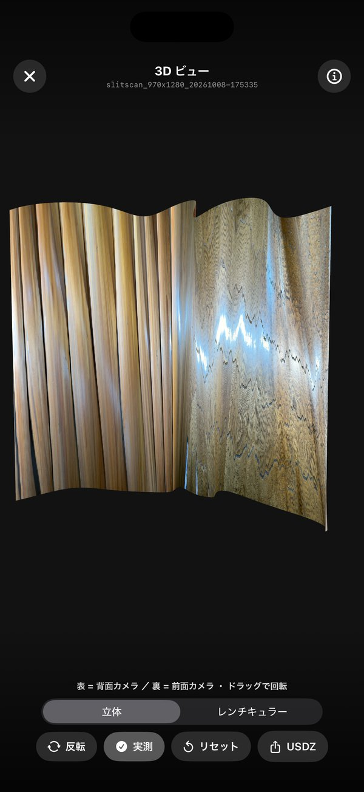
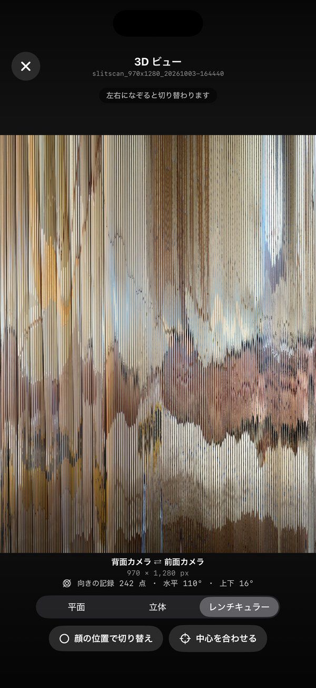
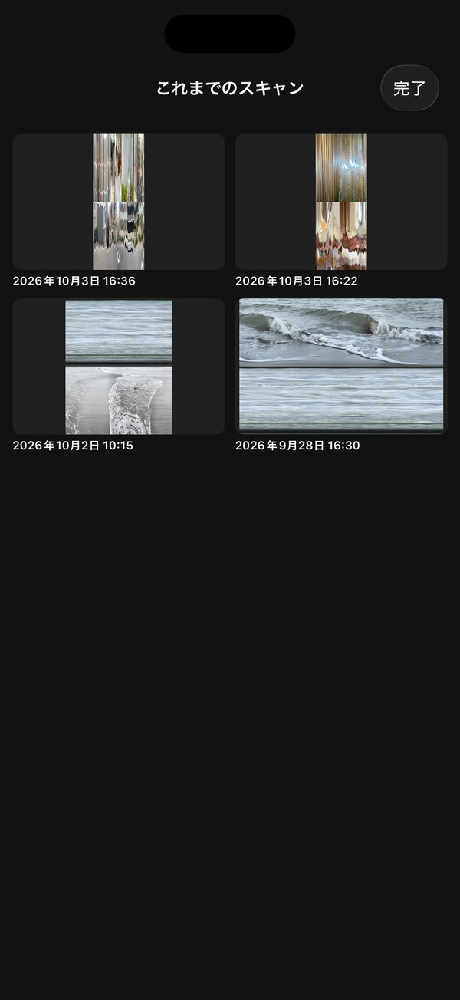

Front & rear dual-side scan
Surface Surfer scans with the iPhone’s front and rear cameras at the same time. Glide the phone over a surface, as if surfing it, to collect interesting surfaces and textures wherever you happen to find them. It works by slit-scanning.
A slit-scan takes just one thin vertical line (the “slit”) from the center of the camera image, frame after frame, and places the lines side by side in the order they were captured. The result is a single long image. Move the phone sideways and the space you pass becomes the image. Hold it still and what changes in front of it over time becomes the image instead.
Surface Surfer records with the back and front cameras at the same time, so every scan holds two things in one record:
Coming to the App Store iPhone 11 or later · iOS 26 or later
Open the app and point the phone at what you want to scan.
Press and hold a volume button (+ or −) or the Camera Control. The app scans for as long as you hold it.
Let go to stop. The scan is saved to your Photos library and then opens in the 3D view.
iPhones without Camera Control work fine with the volume buttons alone.
If you would rather not hold the button down, change the recording mode in Settings to tap to start, tap again to stop. One press starts the scan; the next press stops and saves it.
iOS reports the volume buttons and the Camera Control to apps as two kinds of button, shown in Settings as A (primary) and B (secondary). You can give each of them one of the following jobs. Both start out as Record.
| Assignment | What a press does |
|---|---|
| Record | Starts and stops a scan |
| Toggle back LED | Turns the back light on or off for scanning |
| Toggle horizon lock | Turns horizon lock on or off |
| Not used | Nothing |
If neither A nor B is set to Record, a record button appears on screen.
The scan fills the screen as it grows. The back-camera and front-camera results are shown one above the other when you hold the phone upright, and side by side when you hold it sideways.
Small live previews of both cameras sit in a corner. The red line on them marks where the slit is being taken.
The screen orientation is locked during a scan, so turning the phone partway through will not flip the layout.

Optical flow is a way of measuring how far, and in which direction, things in the picture have moved between one frame and the next. Surface Surfer uses it to judge how much the picture is moving and adjusts how fast it writes slits:
This also reacts when the phone is fixed in place but the subject moves, such as people walking by or water. You can turn it off in Settings.
Using the gyroscope (the sensor that measures how the phone tilts and turns), the app keeps the slit vertical relative to the world even when the phone leans to one side, much like the horizon leveling on action cameras. It can be turned on or off in Settings.
The back light can be switched on for the duration of each scan. It can be turned on or off in Settings.
When a scan ends, it opens in a 3D view. (You can turn this off in Settings.) Along the bottom you can choose between three ways of looking at it.
The scan as a thin board. The front face shows the back camera; the reverse shows the front camera. Drag to rotate, pinch to zoom, and use the flip button to turn the board over.
The board is bent to follow how the phone moved during the scan. The shape is rebuilt from the orientation recorded by the gyroscope and the actual movement measured by optical flow.
| How the phone moved | Resulting shape |
|---|---|
| Straight sideways | A flat board |
| Walking around an object, such as a tree trunk | A cylinder seen from outside |
| Turning on the spot | A panorama-like curve seen from inside |
| Shaking up and down | Waves |
The measured movement sets the spacing between slits, so parts you moved through slowly shrink and parts you moved through quickly stretch out, bringing the proportions of what you scanned close to the real thing. Because the app also knows whether you moved left or right, hollows and bulges are decided automatically.
Turn off the measured-movement button to build the shape from orientation alone (the image keeps its own proportions). Orientation alone cannot tell left from right, so if the shape looks inside out, use the reverse button to swap hollows and bulges. Older scans without a movement record are also built from orientation alone.
A lenticular print is covered with a sheet of tiny ridge-shaped lenses, so that it shows a different picture depending on the angle you look from. This view imitates one: the two images are cut into thin vertical stripes and interleaved.
Tilt the phone left and right to switch between the back-camera and front-camera image. In between, the two blend together as stripes.
If you turn on face position, the front camera finds your face and its position is used instead of the tilt. It follows where your face is, not where your eyes are looking.
Flat and Solid can be exported as a USDZ file (Apple’s 3D file format). If you are looking at Solid, the bent shape is what gets exported. The file opens in the Files app and in AR Quick Look.



Each scan is saved automatically to your Photos library as a PNG: one image that combines the back and front results. In Settings you can choose how the two are arranged:
You can also choose to save the back-only and front-only images as well.
Their file names end in _back and _front.
Scans made with the phone held sideways are tagged so that Photos shows them the right way up. With full Photos access, scans are also added to an album named “Surface Surfer”.
For every slit, the app records which way the phone was facing at that moment (from the gyroscope) and stores the record inside the saved PNG, as an extra text chunk. The image still opens normally in any app. When you reopen a scan from past scans, this record is used to rebuild the Solid shape.
If you turn on location recording, the app uses GPS to record where the scan started. Location is only read while the app is in use. The recorded location goes into:
slitscan_7998x3840_20261003-113147_N35.6812_E139.7671It is also shown in the 3D view.
If you share the image or file, you share where it was taken. To keep coordinates out of file names only, turn off the option that adds them to the file name. To stop recording location altogether, turn off location recording.
Open this from the top-right of the main screen. It lists only the scans saved by this app; none of your other photos appear. Tap a scan to open it in the 3D view again.

iOS lets you decide how much of your Photos library each app can use. Surface Surfer needs:
| Read access | What works |
|---|---|
| None | Past scans cannot be opened. Scanning and saving still work. |
| Limited access | Scans this app saved are visible. Scans saved before you chose limited access appear once you add them with “select more photos”. The album is not created. |
| Full access | All your scans are visible, and the “Surface Surfer” album is created. |
Even with full access, the app only reads the scans it saved itself. You can change the access level by opening Surface Surfer in the iPhone Settings app and choosing Photos.
Watch the battery and heat. Processing 4K video from two cameras at once uses a lot of power and can make the phone warm.
Long 4K scans produce large PNG files, often tens of megabytes each, so keep an eye on your storage.
The app uses them as shutter buttons. To get normal volume buttons back, set both A and B to Not used in the button assignment settings. A record button then appears on screen instead.
The app is built around recording the world in front of you and your own side in the same scan. So it only runs on iPhones that can use the back and front cameras at the same time (iPhone 11 or later).
With measured movement on, this is decided automatically from the direction you moved. With it off (orientation only), the app cannot tell whether the phone moved left or right, so tap the reverse button to swap the hollows and bulges.
In the file name, in the Photos location, and in the orientation record inside the PNG. Turn off location recording in Settings to stop it, or turn off just the file-name option to keep coordinates out of file names. See Location for details.
“Add only” is enough to scan and save. To look at past scans in 3D again, choose limited or full access. The “Surface Surfer” album is only created with full access. Whichever you choose, the app only reads the scans it saved itself. See Past scans for details.
To keep Surface Surfer free, a small banner ad is shown at the bottom of the main screen. It never covers the scan.
Your scans and scan locations are never used for ads. See the privacy policy for details.
For bug reports and requests, please get in touch below. It helps to include your iPhone model, iOS version, and the steps that lead to the problem.
For how the app handles your data, see the Privacy Policy.